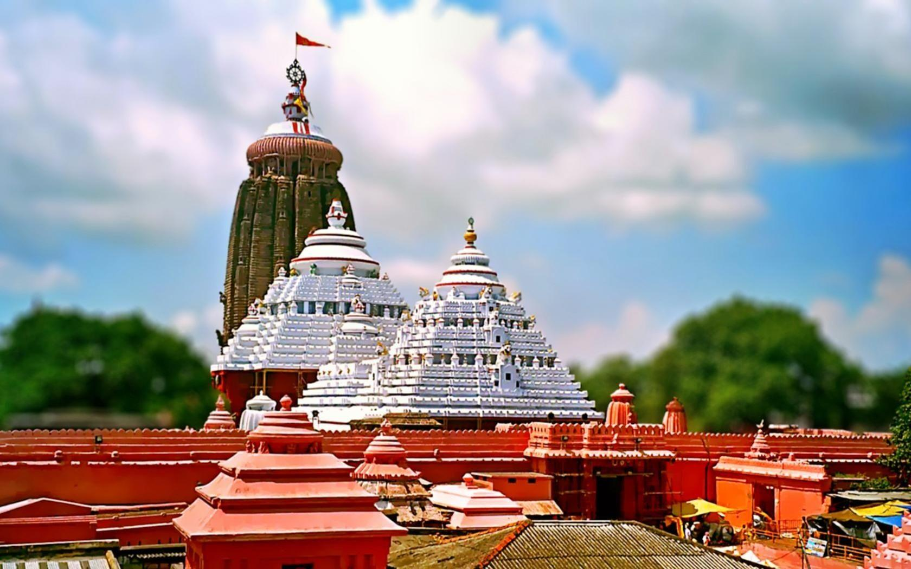
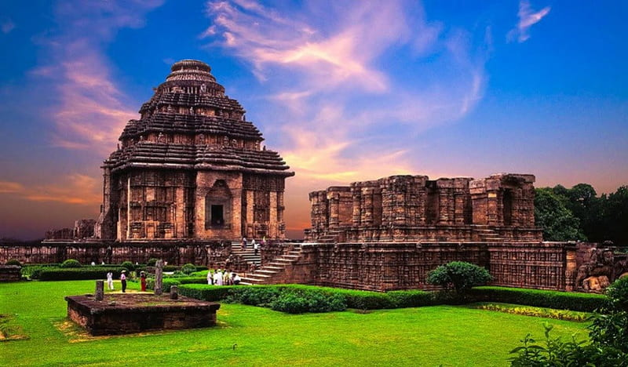
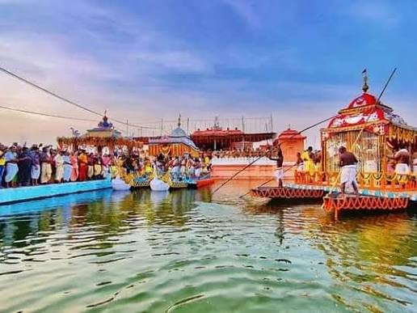
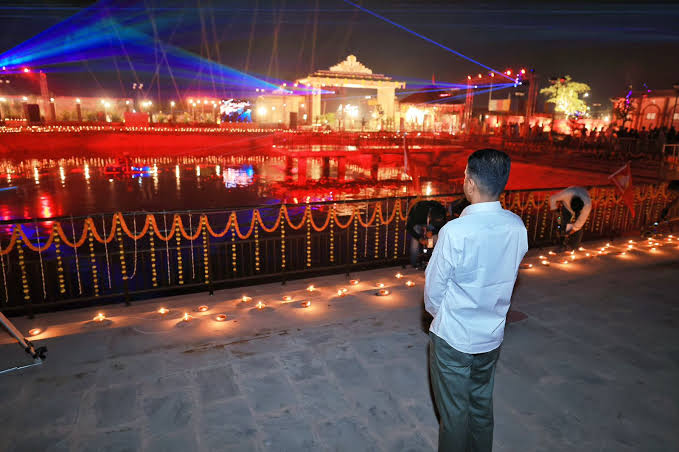
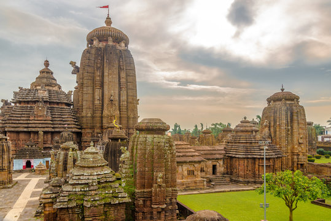
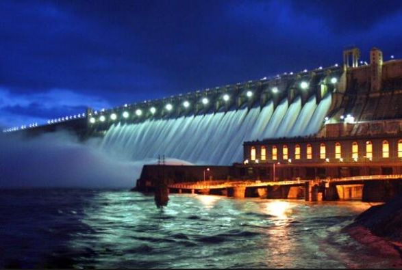
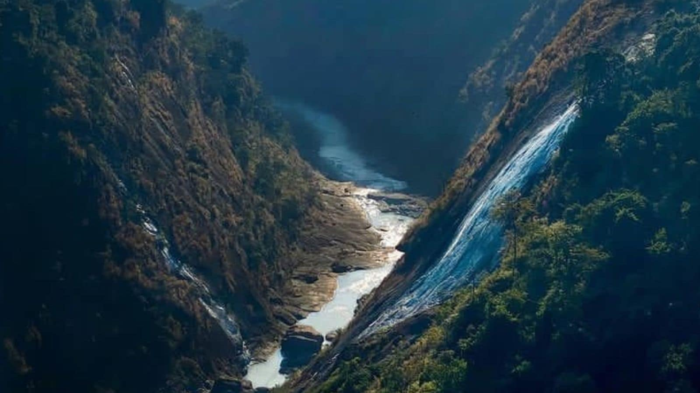
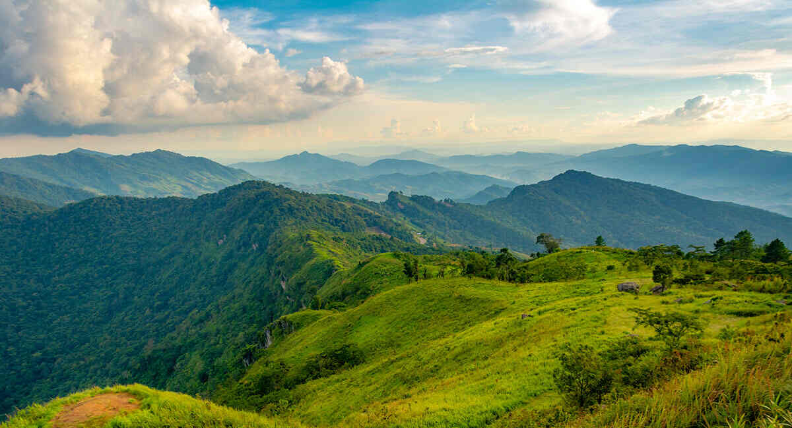
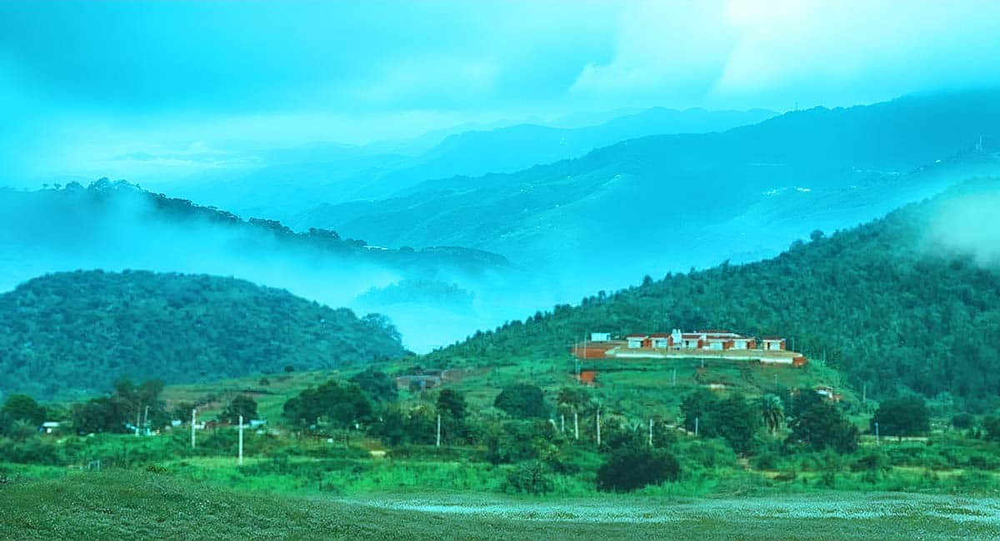
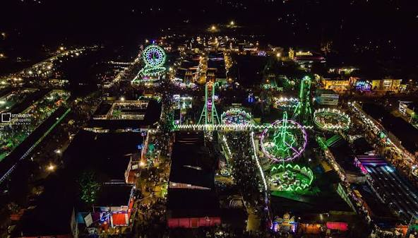

The present Jagannath Temple is generally associated withAnantvarman Chodaganga Deva of the Eastern Gangaa dynasty, whose reign began in the 12th century. Today, Puri is both amajor pilgrimage destination and a major tourist city, combining its ancient religious heritage with its beach and cultural attraction.

Konark Sun Temple The Konark Sun Temple is one of the most famous historical monuments of Odisha. It is located in Konark, near the Bay of Bengal. The temple was built in the 13th century by King Narasimhadeva I of the Eastern Ganga dynasty and is dedicated to Surya, the Sun God. The Konark Sun Temple is a UNESCO World Heritage Site and is an outstanding example of Odisha’s ancient architecture, engineering and artistic heritage.

Panchalingeswar Panchalingeswar is a famous pilgrimage and tourist destination in Balasore district, Odisha. It is located on a hill surrounded by beautiful green forests and peaceful natural scenery. The place is named after five Shiva Lingas, which are believed to be present inside a natural rocky stream. Panchalingeswar is especially beautiful during the monsoon season, when the greenery increases and the stream flows strongly.

Maa Samaleswari Temple Maa Samaleswari Temple is a famous Hindu temple located in Sambalpur, Odisha, on the banks of the Mahanadi River. The temple is dedicated to Maa Samaleswari, the presiding goddess of Sambalpur and an important deity of western Odisha. The temple has great religious and cultural importance in the region. Nuakhai, one of Odisha’s major agricultural festivals, is closely connected with the traditions of Maa Samaleswari. Thousands of devotees visit the temple during important festivals and special occasions.

Lingaraj Temple The Lingaraj Temple is one of the oldest and most important temples in Bhubaneswar, Odisha. It is dedicated to Lord Lingaraj, a form of Lord Shiva. The present temple complex was mainly developed during the 11th century, under the Somavamsi dynasty. The annual Rukuna Rath Yatra is an important festival associated with the temple. Lingaraj Temple represents the rich religious, architectural and cultural heritage of Odisha.

Hirakud Dam: Hirakud Dam is one of the most important dams in Odisha, built across the Mahanadi River near Sambalpur. It was inaugurated in 1957 and is one of the world's notable major earth dams. The dam was built mainly for flood control, irrigation and hydroelectric power generation. The Hirakud reservoir is very large and supports agriculture and water management in the region. The area around the dam is also popular for tourism. Gandhi Minar and Nehru Minar offer beautiful views of the reservoir and surrounding landscape.

Dumduma Waterfall: Dumduma Waterfall is a beautiful natural attraction in Koraput district of Odisha. It is surrounded by green hills, dense forests and peaceful natural scenery. The waterfall becomes especially attractive during the rainy season when the flow of water increases. The surrounding Eastern Ghats provide a beautiful backdrop and make the area suitable for nature lovers and photographers. Visitors can enjoy the fresh air, greenery and peaceful atmosphere.

Deomali: Deomali is the highest mountain peak in Odisha, located in Koraput district. It stands at about 1,672 metres above sea level and is part of the Eastern Ghats. Deomali is surrounded by green hills, forests and beautiful valleys. It is a popular destination for trekking, nature lovers and adventure enthusiasts. The peaceful environment and fresh mountain air make it an attractive place for visitors. The region is also home to several tribal communities with rich traditions and culture. The sunrise and sunset views from Deomali are especially beautiful.

Daringbadi: Daringbadi is a beautiful hill station in Kandhamal district of Odisha. It is popularly known as the “Kashmir of Odisha” because of its cool climate, green hills and natural beauty. The place is surrounded by forests, waterfalls and valleys.< Daringbadi is a peaceful and attractive tourist destination that shows the natural beauty of Odisha.

Bali Yatra – A Symbol of Odisha’s Maritime Heritage: Bali Yatra is one of the most famous cultural festivals of Odisha. It is mainly celebrated in Cuttack during the month of Kartika, especially around Kartika Purnima. The name “Bali Yatra” means “Journey to Bali” and reminds people of Odisha’s ancient maritime history and its connections with Southeast Asia.